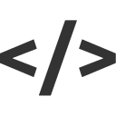

一只睡觉的狗
C/C++
Java
Python

FrontEnd
目前写的比较多的编程语言，感觉能学的东西比较多，而且能实现很多东西。一开始在学校里学的C，然后根据自己的兴趣学习了C++。选择了密码学的部分算法和整体组织来学习C++的特性。目前写过简单的高精度库，密码学库，Json解析器和TCP/HTTP服务器。
而且写C++有种真正感觉在控制内存和硬件的感觉，写出来的话很有成就感（当然用的时候也有一点警惕感，怕玩崩溃了）